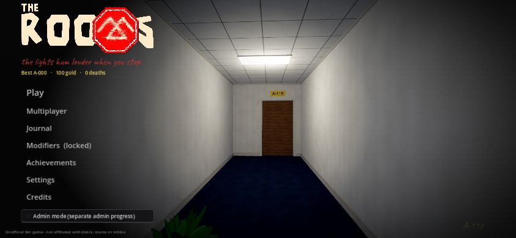
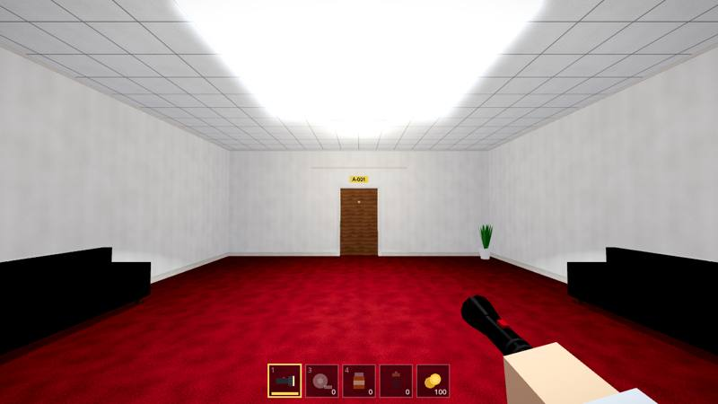
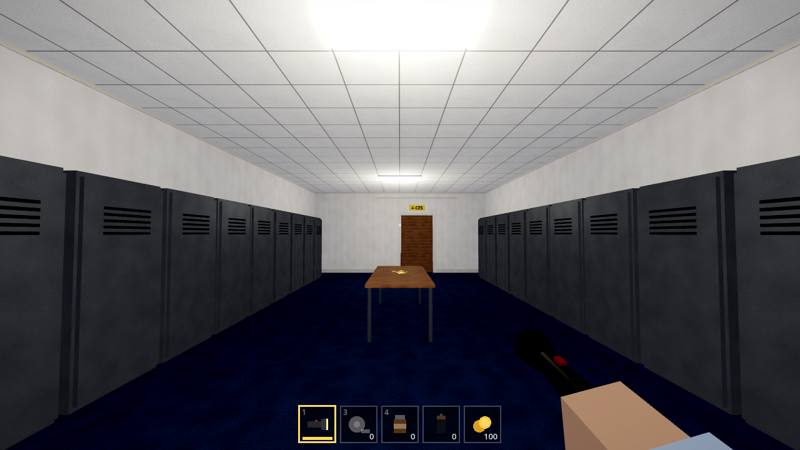
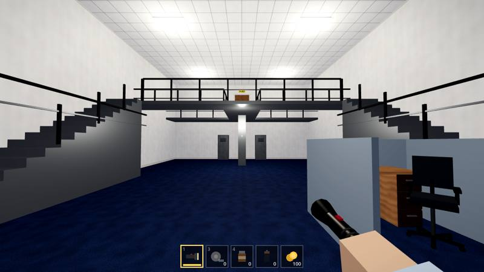
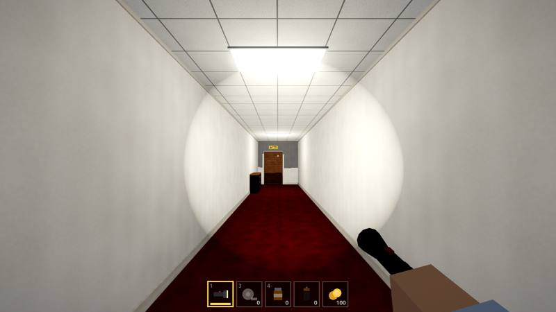
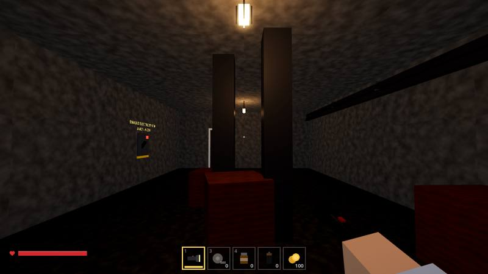
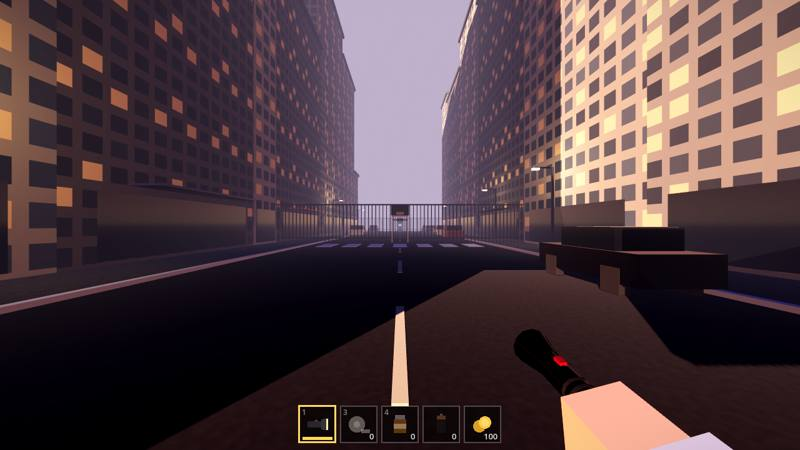
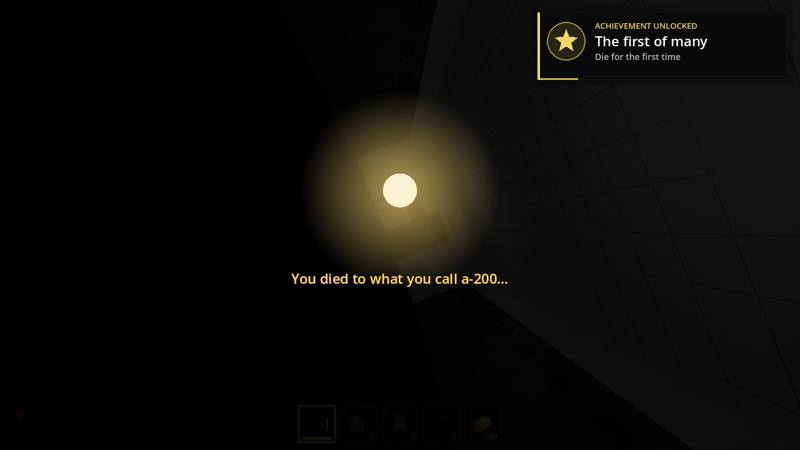

you start on your first day
the ROOMS is a first person horror game set in the offices of miles, the company you work for. the lobby door locks behind you, and the only way out is forward: through room after generated room, from a-000 all the way to a-1000.
it's a fan game inspired by nicorocks5555's roblox game rooms, the rooms floor in lsplash's doors and rooms: revisited. made in godot 4 by jhu.





three floors, pick one
the offices
the endless office. normal until a-30, foggy after, pitch dark from a-150. lights break and flicker more the deeper you go.
the wires
the maintenance floor underneath. concrete, pipes and cage lamps. flip the breakers, dodge the hanging wires, power the elevator and ride it up into the fixed office, where your coworkers really don't like being stared at.
the great city
walk through the a-1000 door and you're outside at dusk, in front of the miles tower. the entities still find you out here, plus headlights and the billboard. the bus at c-30 takes you home.


what's in the hallway
every entity has a warning if you know what to look for. the curious light tells you what you did wrong after you die.

rushes from behind. the lights flash red every 4 seconds before it arrives. crackle, then hiss.
hide in a lockerslow, from the rooms ahead, metallic clanging. bulbs drop out of the ceiling and the room goes dark blue. it tears some lockers open.
wait until the sound is gonea knock, the audio cuts out, a face and a stop sign flash on screen. any input deals 90 damage.
don't touch anythinggives you 5 to 10 orders: halt or proceed. get one wrong and lose 20 to 30 health.
follow the signthe happy scribble. comes from the front and rebounds about 3 times. lockers around you creak open one by one first.
white = hide, purple = get outa 2% chance at a-505. bounces back and forth with boss music for 20 doors while you sprint at double speed.
runthe locker mimic. from a-035 a locker can be fake, with a faint face on its door.
check the door before you hidea warp portal opens in the room. look away for too long and it pulls you in.
keep looking at ita glitchy outlet that lunges out of the walls, live wires hanging from the ceiling, and a white fog with a faint face.
find the breakeryour coworkers. stare at one and they yell "IM AN INTROVERT", then come through the rooms after you.
don't starea horn, then lights tear down the street.
get in a phone boothit's up there. it wants you to look.
don't look updoors worth remembering
between these, every standard room from the rooms floor and its variants: locker rooms, the tall stair room with the catwalk bridge, the projector room, e-shaped, l-shaped, storage, the break room fridge you can hide in, and more.
- A-000the lobby. couches, a skylight, and the dispenser with four buttons for your first items.
- A-050the library. find the four glowing books to get the code for the exit.
- A-060+the cafeteria. rows of tables, a serving counter, vending machines.
- A-100the message corridor. someone left a message on the wall. they didn't finish it.
- A-150the shop. spend your gold on batteries, bandages and vitamins. it's dark from here on.
- A-200+exit doors. every 50 to 100 rooms. you can hear them from the room before. leaving unlocks modifiers and the starhelp.
- A-240the secret way down. a locker pushed aside from a crack in the wall, and a management key in one of the drawers.
- A-505maybe a-60b. 2% chance.
- A-1000the bridge. a wooden bridge over the void, the stardevice and the starjug, and the glowing door out.
everything else
co-op for 4
host online and send friends a 5 letter code. works from anywhere. on the same wifi, hosts show up in a list. dead players spectate.
star items
the stardevice warns you, the starjug heals and gives a star shield (6 sips), the starhelp runs on your batteries. kept between runs.
modifiers
lights out, rush hour, fragile, nowhere to hide, inflation, and "got any more doors?", which brings rush, ambush, eyes, screech, figure and seek into the office.
cutscenes
your first day, the elevator ride past every floor from w to a, the a-1000 door opening onto the street, and the bus home with the credits.
the worker's journal
8 handwritten pages of backstory that unlock as your best door gets further.
loot and gold
pull out dresser drawers, rob desks, bank gold at the atms in the fixed office. gold carries over between runs.
saves every door
quit whenever. continue from the same room with the same items and health.
admin panel
noclip, god mode, spawn any entity, jump to any door. admin runs keep their own separate progress.
how to play
| action | keyboard / mouse | gamepad | touch |
|---|---|---|---|
| move | w a s d | left stick | drag on the left side |
| look | mouse | right stick | drag on the right side |
| sprint | hold shift | l3 | run (toggle) |
| crouch | hold c or ctrl | b | crouch (toggle) |
| interact | e (hold for exit doors) | x | use |
| use item | left click | y or rb | item (tap) |
| pick item | 1–4 or scroll | dpad left / right | tap a slot |
| star items | 5 6 7 | tap a slot | |
| pause | esc | start | || |